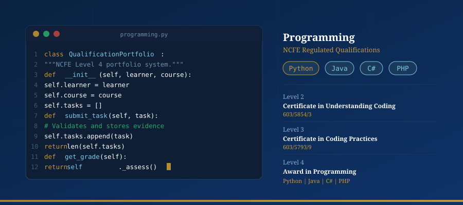
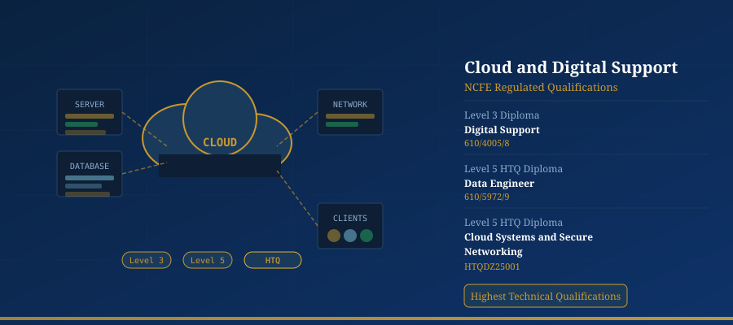
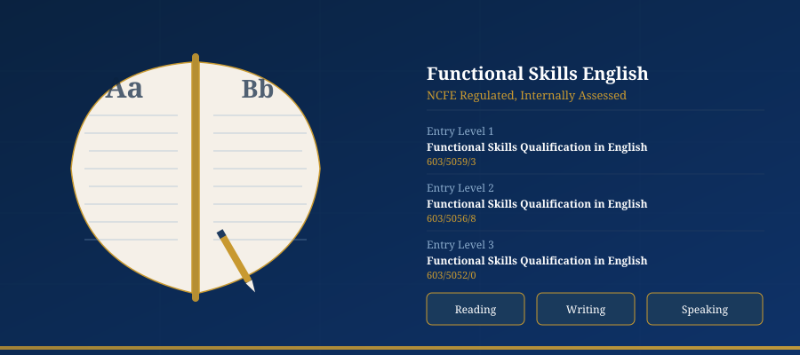

NCFE Regulated Qualifications
We deliver NCFE regulated qualifications across five subject areas: Programming, Cyber Security, Data Science and Analytics, Cloud and Digital Support, and Functional Skills English. All qualifications sit on the Regulated Qualifications Framework (RQF) and are nationally recognised by UK employers and universities.

Programming
Our programming qualifications introduce learners to coding principles, problem-solving, and software development. From understanding the fundamentals to applying them in real projects, these qualifications build a solid technical foundation.
- Levels 2 and 3 available
- NCFE regulated, RQF accredited
- Portfolio-based assessment
- 100% online delivery

Programming qualifications at Level 2 and Level 3.
Qualifications in this area
| Qualification | Level | Number |
|---|---|---|
| NCFE Level 2 Certificate in Understanding Coding | Level 2 | 603/5854/3 |
| NCFE Level 3 Certificate in Coding Practices | Level 3 | 603/5793/9 |
Cyber Security
Our cyber security qualifications range from foundational awareness through to Higher Technical Qualifications (HTQ) at Level 4. You will develop skills in threat analysis, network security, ethical hacking principles and security engineering.
- Levels 2, 3 and 4, including HTQ Diploma
- Covers principles, practices and occupational entry
- Aligned to UK Cyber Security Council standards
- NCFE regulated, RQF accredited
Cyber Security qualifications from Level 2 Certificate to Level 4 HTQ Diploma.
Qualifications in this area
| Qualification | Level | Number |
|---|---|---|
| NCFE Level 2 Certificate in the Principles of Cyber Security | Level 2 | 603/5853/1 |
| NCFE Level 3 Certificate in Cyber Security Practices | Level 3 | 603/5762/9 |
| NCFE Level 3 Technical Occupational Entry in Cyber Security - Diploma | Level 3 | 610/4004/6 |
| NCFE Level 4 Diploma: Cyber Security Engineer - HTQ | Level 4 | 603/7748/3 |
Data Science and Analytics
Our data qualifications develop the skills needed to collect, analyse, interpret and present data. From Level 2 data analysis to the Level 4 HTQ Data Analyst Diploma, these qualifications are built for the UK data economy.
- Levels 2, 3 and 4, including HTQ Diploma
- SQL, Python, statistics and visualisation
- Aligned to Data Technician and Data Analyst occupational standards
- NCFE regulated, RQF accredited

Data Science qualifications from Level 2 Certificate to Level 4 HTQ Diploma.
Qualifications in this area
| Qualification | Level | Number |
|---|---|---|
| NCFE Level 2 Certificate in Data Analysis | Level 2 | 603/3916/0 |
| NCFE Level 3 Certificate in Data | Level 3 | 603/7882/7 |
| NCFE Level 3 Technical Occupational Entry for the Data Technician - Diploma | Level 3 | 610/4006/X |
| NCFE Level 4 Diploma: Data Analyst - HTQ | Level 4 | 603/7751/3 |
Cloud and Digital Support
Our cloud and digital qualifications develop the technical skills needed to support, manage and build cloud-based systems. The Level 5 HTQ Diplomas are among the highest technical qualifications we offer, aligned to Data Engineer and Cloud Networking occupational standards.
- Levels 3 and 5, including two HTQ Diplomas
- Cloud systems, networking and digital support
- Aligned to IfATE occupational standards
- NCFE regulated, RQF accredited

Cloud qualifications from Level 3 Diploma to Level 5 HTQ.
Qualifications in this area
| Qualification | Level | Number |
|---|---|---|
| NCFE Level 3 Technical Occupational Entry in Digital Support - Diploma | Level 3 | 610/4005/8 |
| NCFE Level 5 Diploma: Data Engineer - HTQ | Level 5 | 610/5972/9 |
| NCFE Level 5 Diploma: Cloud Systems and Secure Networking - HTQ | Level 5 | HTQDZ25001 |
Functional Skills English
Our Functional Skills English qualifications are internally assessed and cover reading, writing and speaking and listening at Entry Levels 1, 2 and 3. They support learners who need to develop their English skills alongside their technical qualifications.
- Entry Levels 1, 2 and 3
- Internally assessed by our centre
- Supports co-delivery alongside technical qualifications
- NCFE regulated, RQF accredited

Functional Skills English at Entry Level 1, 2 and 3, internally assessed.
Qualifications in this area
| Qualification | Level | Number |
|---|---|---|
| NCFE Entry Level 1 Functional Skills Qualification in English | Entry Level 1 | 603/5059/3 |
| NCFE Entry Level 2 Functional Skills Qualification in English | Entry Level 2 | 603/5056/8 |
| NCFE Entry Level 3 Functional Skills Qualification in English | Entry Level 3 | 603/5052/0 |
Qualification FAQs
Are these qualifications nationally recognised?
Yes. All our qualifications are regulated by NCFE and sit on the Regulated Qualifications Framework (RQF). They are recognised by UK employers, universities and the government. NCFE is an Awarding Organisation approved by Ofqual.
What is the difference between a Certificate, Award and Diploma?
These terms refer to the size of the qualification. An Award is the smallest (1 to 12 credits), a Certificate is medium-sized (13 to 36 credits), and a Diploma is the largest (37 or more credits). All three can be at the same level on the RQF.
What is an HTQ (Higher Technical Qualification)?
HTQs are Level 4 and 5 qualifications approved by the Institute for Apprenticeships and Technical Education (IfATE). They are designed to fill the skills gap between A-levels and degrees. Our Level 4 and Level 5 HTQ Diplomas in Cyber Security, Data and Cloud meet this standard.
Do I need a degree to enrol?
No degree is required. Entry requirements vary by level. Level 2 qualifications are open to most learners aged 16 and over. Level 4 and 5 qualifications typically require prior learning at Level 3 or equivalent. We assess each applicant individually and advise on the best starting point.
How are the qualifications assessed?
Most qualifications use portfolio-based assessment, internally marked by our assessors and verified by NCFE. Functional Skills English is internally assessed by our centre. There are no traditional written exams for most qualifications.
Can I study more than one qualification?
Yes. Many of our qualifications are designed to complement each other. For example, a learner might complete the Level 2 Certificate in Understanding Coding, progress to the Level 3 Certificate in Coding Practices, and then add the Level 4 Diploma: Data Analyst HTQ alongside it.
Not sure which qualification is right for you? Our admissions team is happy to advise on the best pathway for your goals.